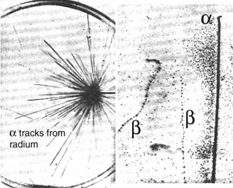

The Cloud Chamber
The study of high energy particles was greatly aided in 1912 when C. T. R. Wilson, a Scottish physicist, devised the cloud chamber. The general procedure was to allow water to evaporate in an enclosed container to the point of saturation and then lower the pressure, producing a super-saturated volume of air. Then the passage of a charged particle would condense the vapor into tiny droplets, producing a visible trail marking the particle's path.
The device came to be called the Wilson cloud chamber and was used widely in the study of radioactivity. An alpha particle left a broad, straight path of definite length while an electron produced a light path with bends due to collisions. Gamma rays did not produce a visible track since they produce very few ions in air. The Wilson cloud chamber led to the discovery of recoil electrons from x-ray and gamma ray collisions, the Compton-scattered electrons, and was used to discover the first intermediate mass particle, the muon. Wilson was awarded the Nobel Prize in physics in 1927 for the development of the cloud chamber.
|  | The images at left are typical of those obtained by Wilson (C. T. R. Wilson, Proc. Roy. Soc. (London), 87, 292 (1912)). The cloud chamber provided a device for studying the collisions between free particles and the decay of particles in flight.
|
The cloud chamber found use in particle physics until the invention of the bubble chamber in 1952 by D. A. Glaser.
|
Index
Particle concepts
Reference
White
Modern College Physics, Ch 52 |